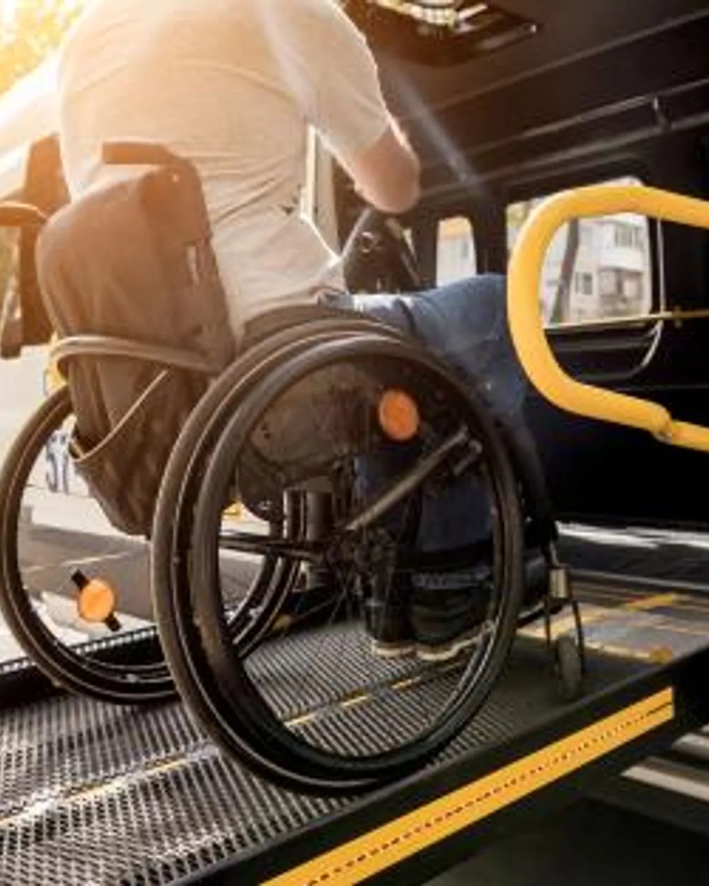

NEMT 101: everything you need to know about our services
New to non-emergency medical transportation? What it is, who it’s for and how to book a ride.

Transportation is more than getting from one place to another. For many seniors, individuals with disabilities, and those managing chronic health needs, transportation represents access to medical care, independence, and quality of life. At Faithful Rides LLC, we understand how important that is—and we are here to make the journey safe, reliable, and compassionate.
If you’re new to Non-Emergency Medical Transportation (NEMT), this guide will help you understand what it is, who it’s for, and how our services can support you or your loved ones.
What is NEMT?
Non-Emergency Medical Transportation (NEMT) provides safe transportation for individuals who need assistance getting to medical appointments but do not require emergency ambulance care. This service helps bridge the gap for seniors, adults with mobility challenges, and those with health conditions who may not be able to drive themselves.
NEMT is especially helpful for:
- Doctor’s appointments and follow-ups
- Dialysis treatments
- Physical therapy and rehabilitation sessions
- Chemotherapy or infusion visits
- Routine tests and check-ups
- Pharmacy pick-ups
- Adult day care or wellness programs
When transportation becomes a barrier, health can quickly suffer. NEMT ensures that important care is never out of reach.
Who Benefits from NEMT Services?
Our services are designed to support:
- Older adults who no longer drive
- People with disabilities or limited mobility
- Individuals recovering from surgery or illness
- Clients who use wheelchairs or walkers
- Caregivers who need reliable transportation support for their loved ones
We come alongside individuals and families to reduce stress, increase safety, and maintain independence.
What Makes Faithful Rides LLC Different?
At Faithful Rides LLC, we believe transportation should be safe, respectful, and comforting. We don’t just drive—we care.
Here’s what you can expect:
Compassionate, Trained Drivers
Our drivers are trained in passenger assistance, safety protocols, and sensitivity in supporting clients who may need extra time or care. You will always be treated with patience, dignity, and understanding.
Comfortable, Accessible Vehicles
Our vehicles are equipped with features to assist passengers using walkers, canes, or wheelchairs. We prioritize comfort and safety for every ride.
Reliability You Can Count On
Appointments are important. We arrive on time and make sure you return home safely.
Door-to-Door Support
We don’t just pull up to the curb. We assist clients from their home, into the vehicle, and into their destination with steady, secure support.
How to Schedule a Ride
Booking with us is simple and stress-free: Call us to request transportation or ask questions Share your appointment date, time, and location We confirm your ride and ensure everything is ready for your trip We arrive on time and assist you throughout the journey
We also offer recurring ride scheduling for ongoing treatments like dialysis or therapy.
Why NEMT Matters
When transportation is accessible, people can:
- Stay consistent with medical care
- Maintain independence
- Reduce stress for themselves and family caregivers
- Avoid missed appointments and complications
- Feel more connected and supported
NEMT is more than a ride—it’s a lifeline to continued health, dignity, and well-being.
We’re Here for You
Whether you are a senior, a caregiver, or a healthcare provider seeking reliable transportation for your patients, Faithful Rides LLC is honored to serve you. We believe every person deserves to feel safe, respected, and cared for on their journey.
Let us help make every appointment a little easier.
Contact Faithful Rides LLC today to schedule your ride or learn more about our services.